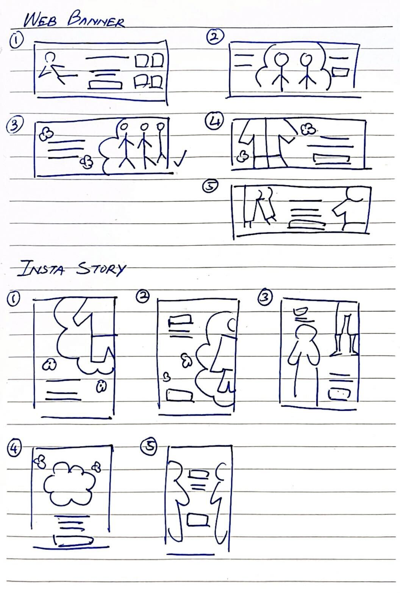
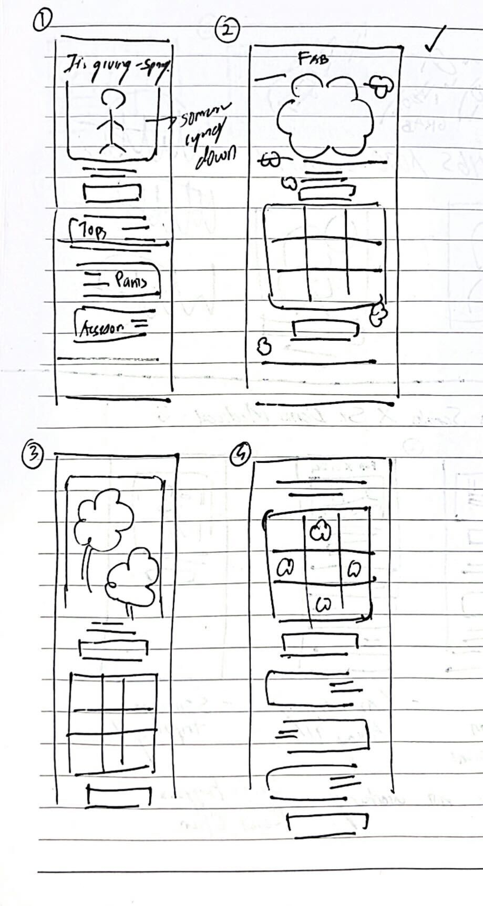

Fabletics Spring Campaign
Email & Social Campaign
A campaign concept that extends a fresh spring palette and activewear styling across email, e-commerce, and social media touchpoints. This is a speculative project and is not affiliated with or endorsed by Fabletics.
.jpg)
Context
Fabletics needed a clear, cohesive brand presence that could carry across email marketing, e-commerce, and social content.
Insight
A spring campaign works best when the visual identity feels fresh and energetic while remaining consistent across every customer touchpoint.
Concept
Build a coordinated campaign around fresh spring color, activewear styling, and a polished yet playful visual system.
Execution
Developed campaign graphics for email marketing and social media, creating repeatable layouts that brought the spring collection together across formats.
.jpg)
Research
By researching Fabletics' audience, competitors, and visual language, I developed a cohesive cross-channel strategy built on seasonal color and energetic messaging. Pairing simple pastel tones with clean sans-serif typography resulted in a modern, breathable campaign that feels inviting everywhere.

Campaign Ideation
The new spring color launch will serve as the focal point, supported by concise messaging and playful decorative elements that add energy without competing for attention.


Campaign Motif Development
To bring an immediate spring feel to the Fabletics email and social assets without cluttering the layout, I explored five simple floral silhouettes before translating the cleanest five-petal form into a 3D asset. The soft, modular flower serves as a versatile graphic accent—designed to be recolored across the campaign to echo and spotlight the new seasonal color drops.
.png)
_Fabletics.jpg)

.png)
.png)
Programs Used
Adobe Photoshop, Figma, and Blender